为什么把Spring MVC引入到接口测试中
在阅读哨兵系统的源代码进行接口测试的过程中，发现不止哨兵系统，主流运用的都是Spring MVC + Mybatis的框架来开发web。
发现这是个很有趣的事物，学习了一段时间，认为里面的一些个编程思想可以引入到接口测试中来。比如spring的AOP（面向切面的编程），DI也就是依赖注入或者控制反转。
听起来很高大上的词汇，经过一番实践，发现能够有所理解并且也引入到了接口测试中来。
先以我工程的代码片段来举例说明，什么叫Spring的依赖注入。
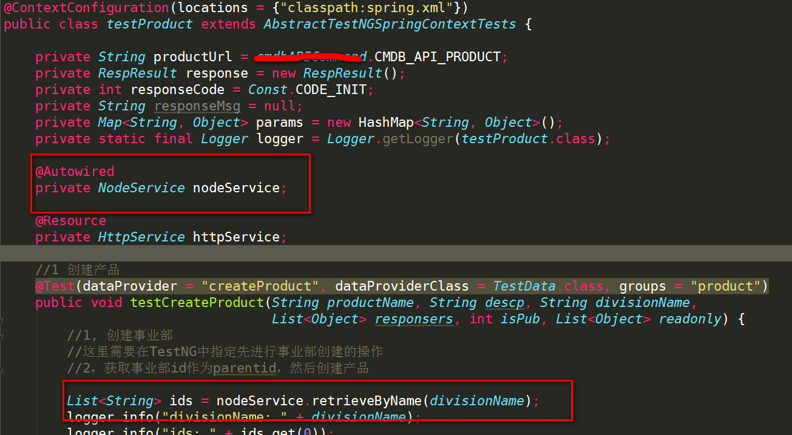
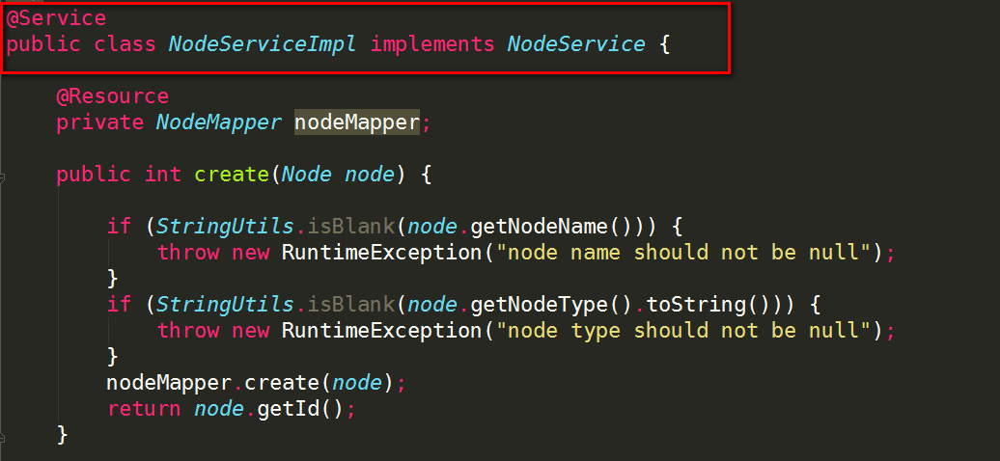
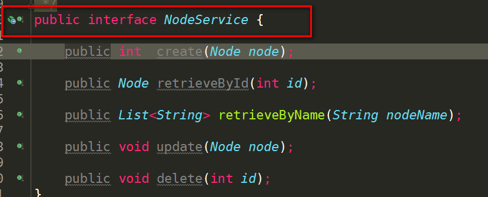
这里有三张图，第一张是使用NodeService，从第三张图中我们可以看到NodeSerice其实就只是一个接口，那么为什么在我的接口测试代码中可以直接调用它的方法呢：
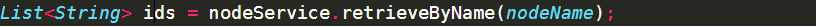
从第二张图中，是这个接口的实现方法。打了一个@Service的注解。这个@Service的注解就是要告诉Spring框架，这是一个JAVA Bean。
那么，神奇的事情发生了。Spring在我的测试业务代码中，使用如下的注解@Autowired，这样Spring就把NodeServiceImpl的实例给创建出来了。
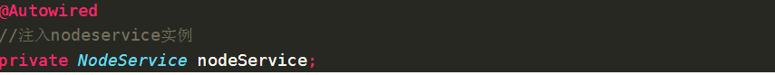
这就是所谓的依赖注入，或者是控制反转。因为实例化NodeServiceImpl的操作Spring帮我们做了，所谓的控制权从我们的业务测试代码转移给了Spring。
那么，这其实就是我理解的AOP，所谓的面向配置或面向切面的编程。在你的业务代码里切入一刀，然后把实例注入进去。，这里说说一句话的事儿，说实话这一句话让我理解了好久。
（其实@Resource也可以，他们有区别，但是我没搞清楚具体使用起来的区别）
往常的做法应该是如下面的示例，需要new一个实例。
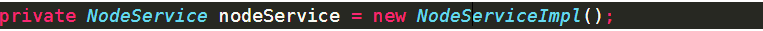
更近一层，既然知道了这样的编程思想。为啥不能把我们常用的HTTP请求的类给转化成这样的呢。答案是肯定的，当然可以。如下面几幅图：
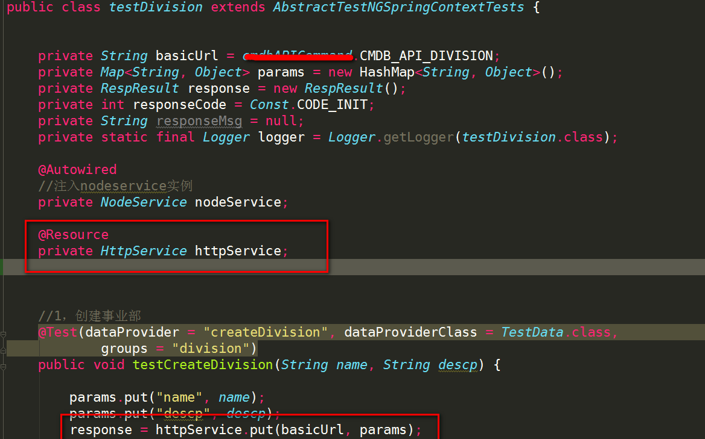
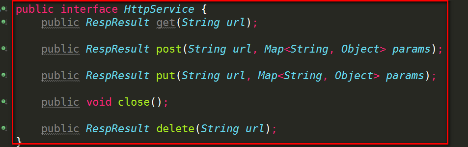
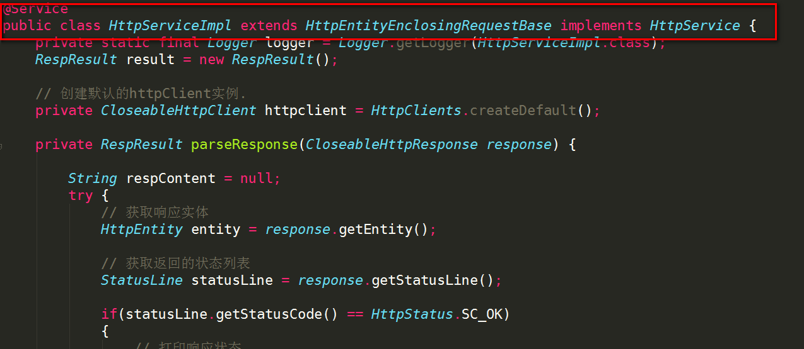
就这样，我们HTTP也是提供给业务测试的一种Service。
为什么把Mybatis引入到接口测试中
Mybatis是一款轻量级的持久层框架，也是哨兵系统进行Dao访问用到的框架。我不知道Hibernate，不要问我区别在哪里，轻在哪里，我只知道很轻便。
依旧举例说明：
首先，展示一下DB层的JAVA代码映射，如下面2张图：
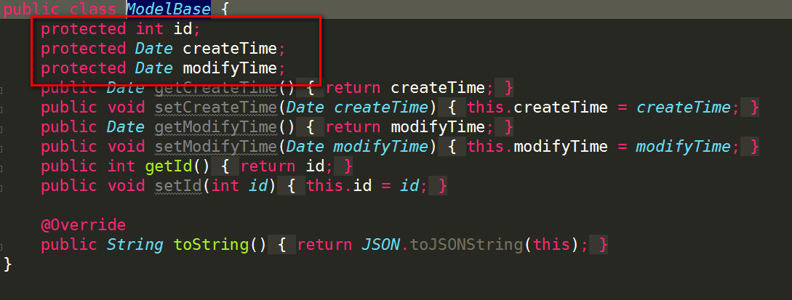
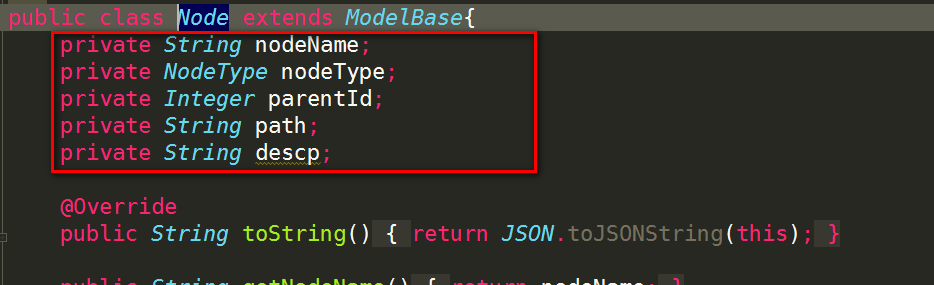
Node是哨兵系统的一张表，格式如下：
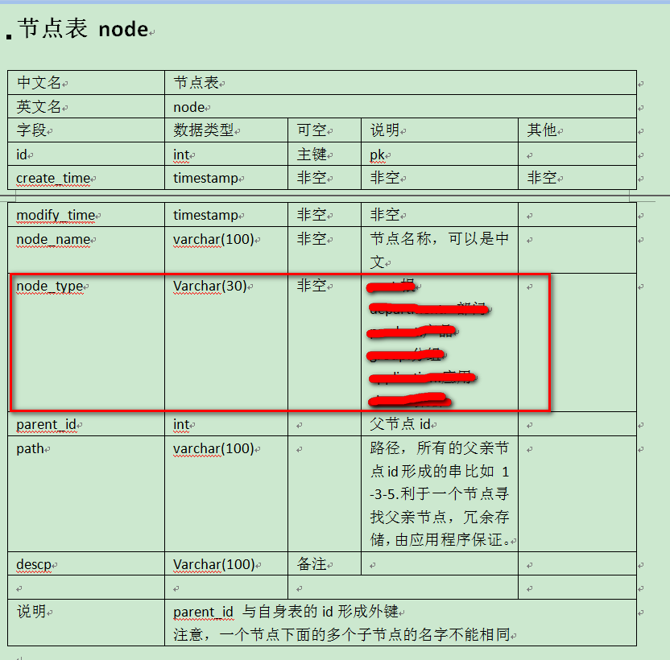
可以看出来Node这个class的所有属性，就是对节点表Node的映射。这就是所谓的DB层。
那么Dao层怎么实现的呢，先看图：
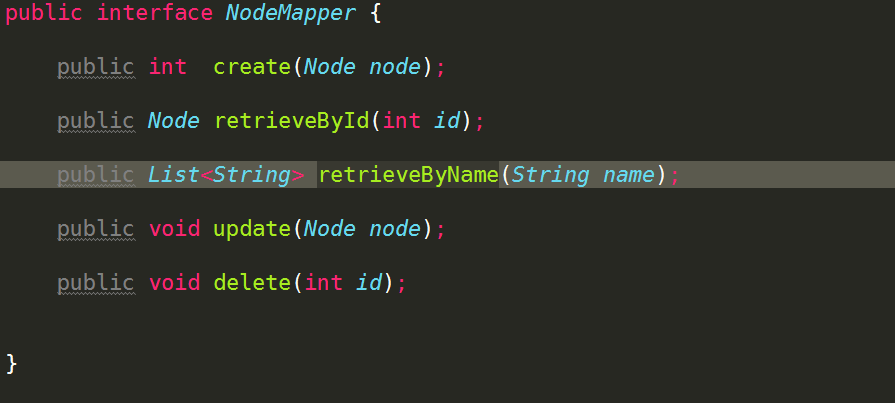
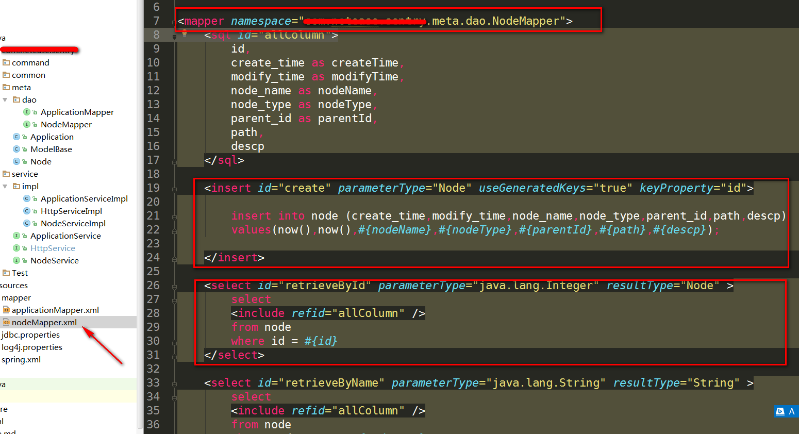
只要定义一个NodeMapper的Interface，然后配置一个nodeMapper.xml，然后我们看到Mapper文件引用的就是NodeMapper这个接口，然后下面的id = create, retrieveById,retrieveByName。很明显，就是这些Interface方法的实现。然后具体内容其实就是带有变量的SQL语句。
简单的讲，其实Mybatis就是这样容易。不用你在使用JDBC的方式把SQL语句以String的方式写入到代码中。只需要的一个配置文件。这也是所谓的面向切面/配置的编程。
如何搭建环境实现
如何使上面这些体系运行起来，这里其实就是Spring的配置的问题。
第一部分：将Spring把所有的JAVA Bean扫进来
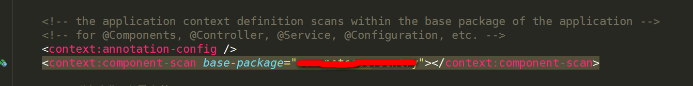
第二部分：指定数据源dataSource，也就是MySql连接池
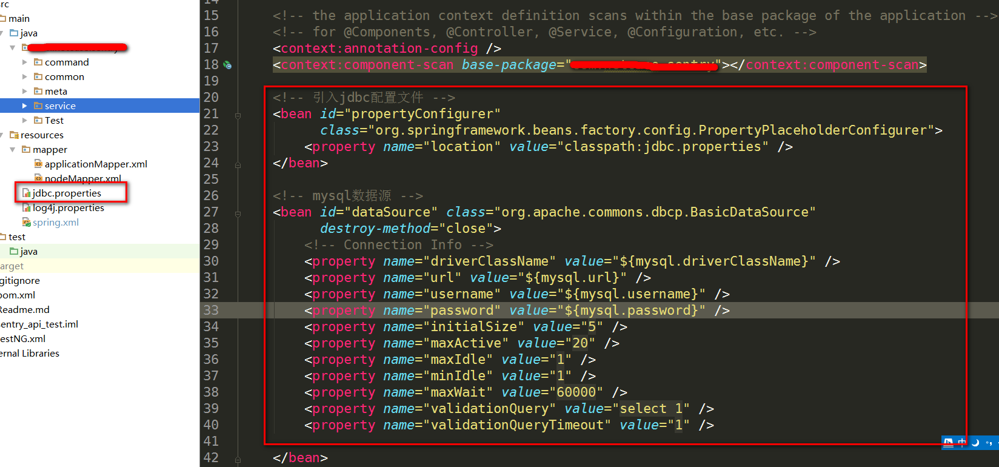
第三部分：将Mybatis和Spring整合
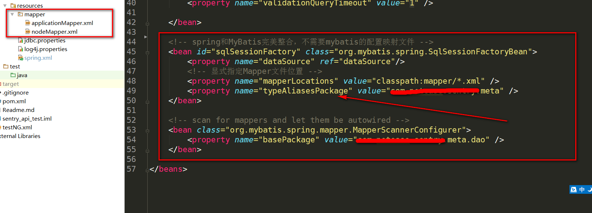
SqlSessionFactoryBean这个类是Spring提供应用于建立SQL连接池的。
其中：
- typeAliasesPackage：它一般对应我们的实体类所在的包，这个时候会自动取对应包中不包括包名的简单类名作为包括包名的别名。多个package之间可以用逗号或者分号等来进行分隔。
- MapperScannerConfigurer：
利用上面的方法进行整合的时候，我们有一个Mapper就需要定义一个对应的MapperFactoryBean，当我们的Mapper比较少的时候，这样做也还可以，但是当我们的Mapper相当多时我们再这样定义一个个Mapper对应的MapperFactoryBean就显得速度比较慢了。为此Mybatis-Spring为我们提供了一个叫做MapperScannerConfigurer的类，通过这个类Mybatis-Spring会自动为我们注册Mapper对应的MapperFactoryBean对象。
好了。你可以做TestNG的测试业务代码编写了。
如何进行TestNG和Spring的结合
在每一个测试类中按照下面这么配置：
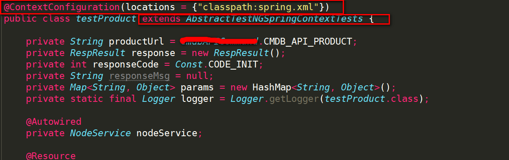
@ContextConfiguration和AbstractTestNGSpringContextTests就可以做到。
原因是：因为我这个是Maven工程，执行的是Maven test命令。而Spring运行test的时候是一个隔离的状态。所以没有办法注入。
这里找到的答案：
“If you create unit tests, Spring IoC functionality is unavailable(as it was intended by the framework designers), because you are testing your objects in isolation(i.e. you are mocking only minimal set of interfaces which are required for the test to complete). “
继续你的业务代码编写吧。
其他
IDE的选择
IntelliJ IDEA真的是太好用了。
- 天生集成了Maven, Git。并且比如什么markdown语言啊，freeMarker，git的ignore文件这些都是可以智能编写。
- 有code inspection功能。你Git push的时候它会有个选项让你做一下code inspection再说..
- 而且正如名字所说，智能。联想功能很强大。
- 长得好看，速度快..
技巧
- Alt+F8，呼唤出Maven的window。
- shift+esc,退出窗口
- Ctrl+alt+S, 呼唤出Setting配置出现错误的时候，
- alt+Enter，出现错误时，它可以给很好联想出解决办法的。
- 可以选择Eclipse的喜好，默认支持Eclipse的所有快捷键。
- 支持VIM编辑器，对于那些linux大神们，可以用这种全宇宙最强大的编辑器了。我不会用。
- ….
如何在TestNG中调试
配置maven命令如下
surefire是maven的一个插件，专门用来test的，TestNG的测试一系列比如报告生成啊，什么都是它来做的
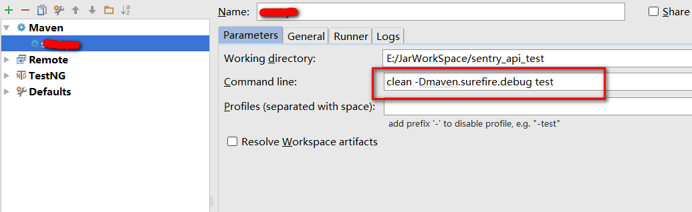
建立一个Remote
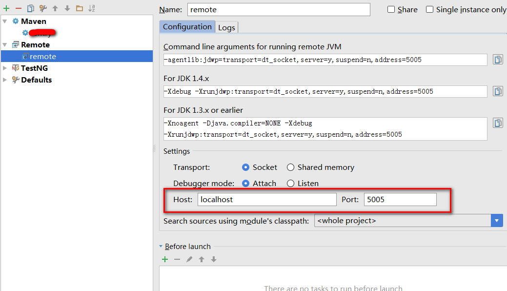
这个5005端口是默认打开的一个用于连接的端口，在下面的图会有体现。
运行Maven命令
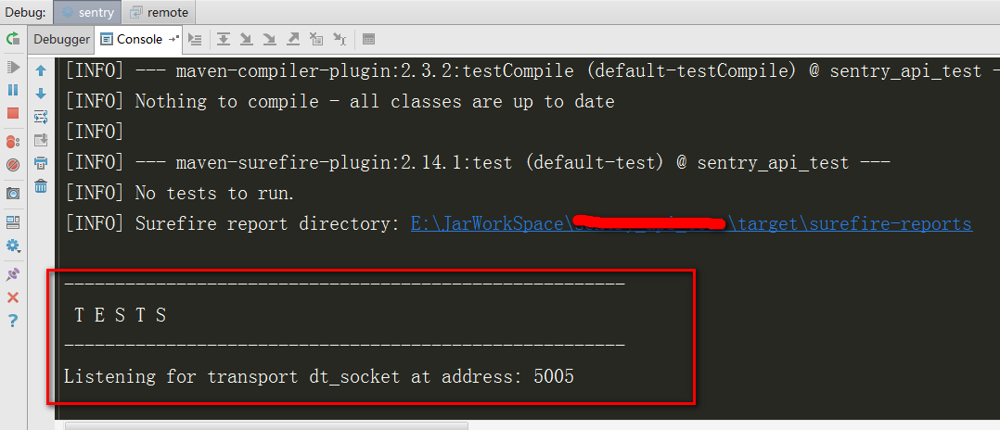
这个时候test的进程就停在那里了。
运行Remote
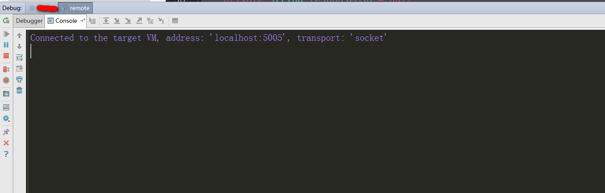
这个时候，只要有断点，就可以断下来了。
至于TestNG本身的知识，这里就不多说了，很多注解和属性我也在使用中。
碰见的坑
- Spring和TestNG的结合，请参阅前面的章节，如果不这么做，TestNG是不会引入spring的所有配置文件的。
- TestNG的调试，参阅前面的章节
- StringEntity() 和 UrlEncodedFormEntity() 的区别：
加载HTTP参数的时候，之前用的UrlEncodedFormEntity，参数传过去不识别。最后发现问题在这里。
|
|
可以参考：链接
有啥问题，可以一起讨论学习。